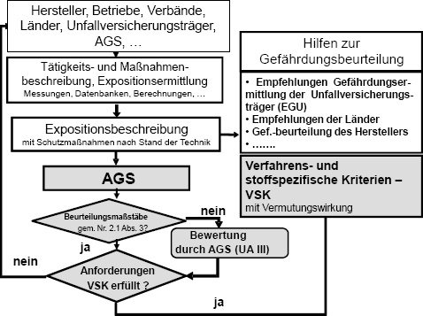

(1) Die Aufnahme von VSK in die TRGS 420 erfolgt auf Beschluss des AGS nach dem Schema von Bild 1. Voraussetzung ist das Vorliegen von Expositionsbeschreibungen gemäß den Anforderungen dieser TRGS einschließlich Festlegung der zu den VSK gehörenden Schutzmaßnahmen und ihrer Wirksamkeitsprüfung.
(2) Die Exposition bei Gefahrstoffen ohne Beurteilungsmaßstäbe gemäß Nummer 2.1 Absatz 3 kann ggfs. durch den AGS auf arbeitsmedizinisch-toxikologischer Basis bewertet und in den VSK dokumentiert werden.
(3) Vorschläge für VSK sind an die Geschäftsführung des AGS zu richten:
| Ausschuss für Gefahrstoffe – Geschäftsführung – Bundesanstalt für Arbeitsschutz und Arbeitsmedizin Postfach 17 02 02 44061 Dortmund Email: ags@baua.bund.de |
Vorschläge sollten bereits vor Beginn von Untersuchungsprogrammen mit dem AGS abgestimmt werden.

Bild: Aufstellung von VSK – Ablaufschema
(4) Für die Aufstellung von VSK werden in der Regel folgende Unterlagen benötigt:
(5) In der Anlage zur TRGS 420 sind die als VSK vom AGS verabschiedeten standardisierten Arbeitsverfahren mit Quellenangabe verzeichnet.